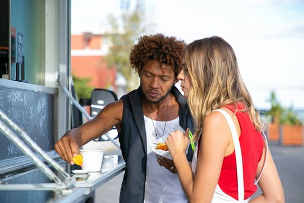

Customer Testimonial

My husband LOVES food that is almost edible, and I have to say it's grown on me. Or at least somethign is growing on me!
This is my favorite depression food, it's definitely the taste you think of when you think... purgatory! It's not alive but it's not dead either, but it's definitely not meat.
Listen if this the meat of the future, and trust me I believe it is, don't look for me in the future. Because I'll be right here, in this moment eating this slop.
My disc golf team has had such wonderful success with the patties. Great weight, aerodynamics, and if we're being completely honest it's just quality almost meat.